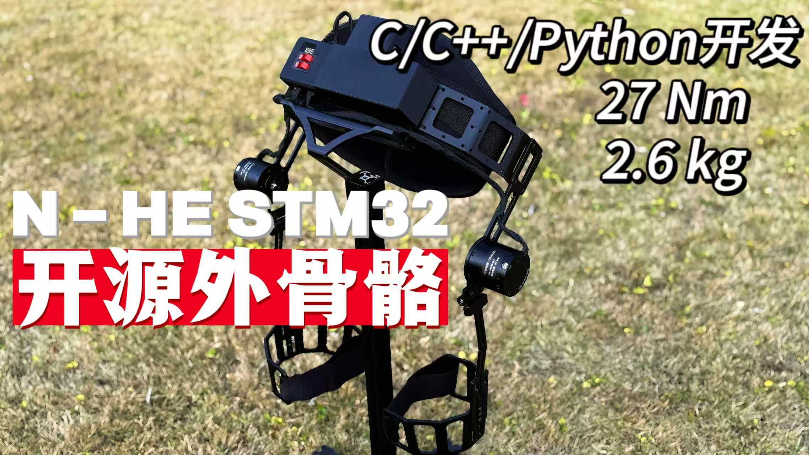

Lower-limb exoskeletons
Perception, prediction, and control methods for lower-limb exoskeletons across level walking, stair negotiation, and other locomotion tasks.
lower-limb exoskeletons · human–robot interaction · intelligent control · multi-sensor fusion
Jingfeng Xiong is currently pursuing a Ph.D. degree in Intelligent Manufacturing and Robotics at the Southern University of Science and Technology. His research focuses on lower-limb exoskeletons, human–robot interaction, intelligent control, and multi-sensor fusion. He has published 11 SCI/SCIE-indexed journal papers. As a first author or co-first author, he has published three journal papers in venues including IEEE/ASME Transactions on Mechatronics and IEEE Transactions on Neural Systems and Rehabilitation Engineering. He has supported the supervision of student research on exoskeleton control, gait prediction, and robot simulation, contributing to study design, experimental implementation, data analysis, and manuscript preparation (co-authoring four papers as the second author).
Perception, prediction, and control methods for lower-limb exoskeletons across level walking, stair negotiation, and other locomotion tasks.
Data-driven approaches for locomotion-mode recognition, gait-phase estimation, joint-moment estimation, and motion-state prediction.
Integration of wearable sensors, kinematics, and environmental information for real-time state estimation and assistance control.
J Xiong, Y Zhang, Y Leng, H Xian, C Chen, Y Wu, W Zhuang, X Chen, et al. IEEE/ASME Transactions on Mechatronics, 1–12. · 2 citations
Y Qian, J Xiong, H Yu, C Fu. IEEE Transactions on Biomedical Engineering. · 5 citations
Y Zhang, J Xiong, H Xian, X Chen, C Fu, Y Leng. IEEE Transactions on Cognitive and Developmental Systems 18(1), 43–56. · 2 citations
H Xian, J Xiong, Y Zhang, X Chen, C Fu, Y Leng. IEEE Transactions on Automation Science and Engineering 22, 16108–16120.
Y Zhang*, J Xiong*, H Xian, C Chen, X Chen, H Liang, C Fu, Y Leng. Biomimetic Intelligence and Robotics, 100246. · 6 citations
H Xian, Y Zhang, J Xiong, C Lei, C Fu, Y Leng. 2025 IEEE International Conference on Cyborg and Bionic Systems, 641–648.
C Lei, X Chen, Y Zhang, H Xian, J Xiong, J Zhou, J Huang, Y Leng. 2025 IEEE International Conference on Real-time Computing and Robotics, 588–593.
Y Qian, C Chen, J Xiong, Y Wang, Y Leng, H Yu, C Fu. IEEE Transactions on Medical Robotics and Bionics 6(1), 281–291. · 12 citations
Y Qian, Y Wang, H Geng, H Du, J Xiong, Y Leng, C Fu. IEEE Transactions on Medical Robotics and Bionics 6(1), 235–244. · 14 citations
H Xian, Y Zhang, J Xiong, W Wei, X Chen, C Fu, Y Leng. International Conference on Intelligent Robotics and Applications, 416–427. · 1 citation
Y Zhang, J Xiong, H Xian, C Chen, X Chen, C Fu, Y Leng. arXiv:2410.00462. · 1 citation
J Xiong, C Chen, Y Zhang, X Chen, Y Qian, Y Leng, C Fu. IEEE Transactions on Neural Systems and Rehabilitation Engineering 31, 4591–4600. · 13 citations
Y Zhang, J Xiong, Y Qian, X Chen, Y Guo, C Fu, Y Leng. International Conference on Intelligent Robotics and Applications, 200–209. · 4 citations
Y Qian, Y Wang, C Chen, J Xiong, Y Leng, H Yu, C Fu. IEEE Robotics and Automation Letters 7(3), 6439–6446. · 126 citations
K Zheng, Y Bai, J Xiong, F Tan, D Yang, Y Zhang. Sensors 20(19), 5541. · 14 citations
K Zheng, D Yang, B Zhang, J Xiong, J Luo, Y Dong. Journal of Sound and Vibration 462, 114931. · 37 citations
* Co-first authors. 16 publications listed from the Google Scholar record supplied by Jingfeng Xiong. Citation counts were captured on 18 August 2026; title links lead to the verified DOI or preprint record when available.
An open-source hip-exoskeleton control project including STM32 firmware, Python debugging tools, and mechanical-model resources. It is intended for research, education, and secondary development.
